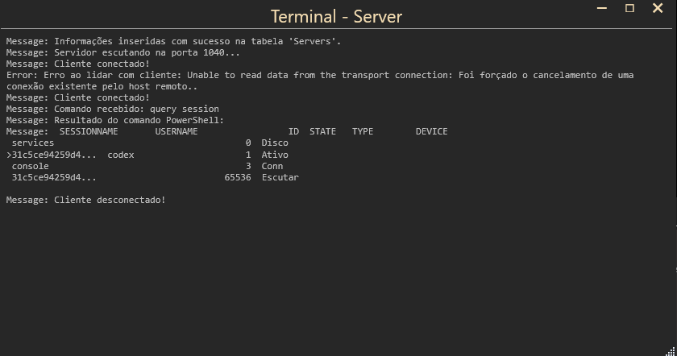
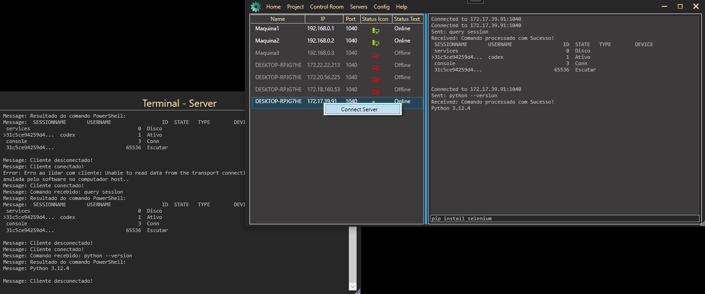
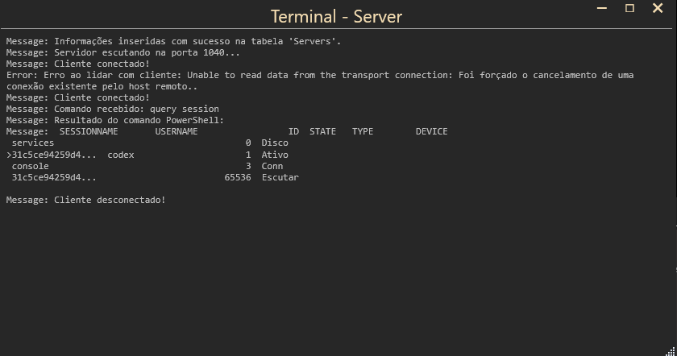
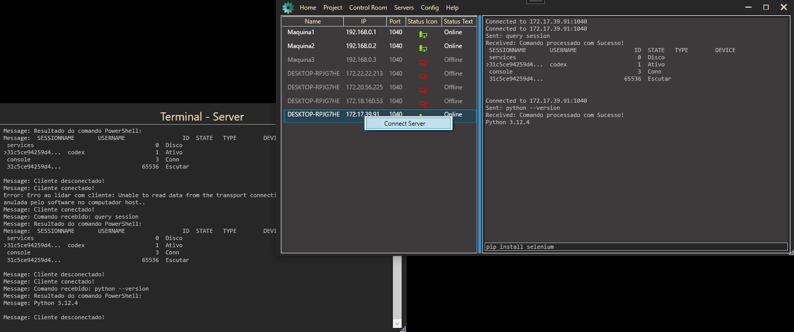

What is View Server?
The View Server feature provides a real-time overview of your servers, allowing you to easily identify which ones are online or offline. This is crucial for ensuring that your services are running smoothly and efficiently.
The View Server feature provides a real-time overview of your servers, allowing you to easily identify which ones are online or offline. This is crucial for ensuring that your services are running smoothly and efficiently.
 


